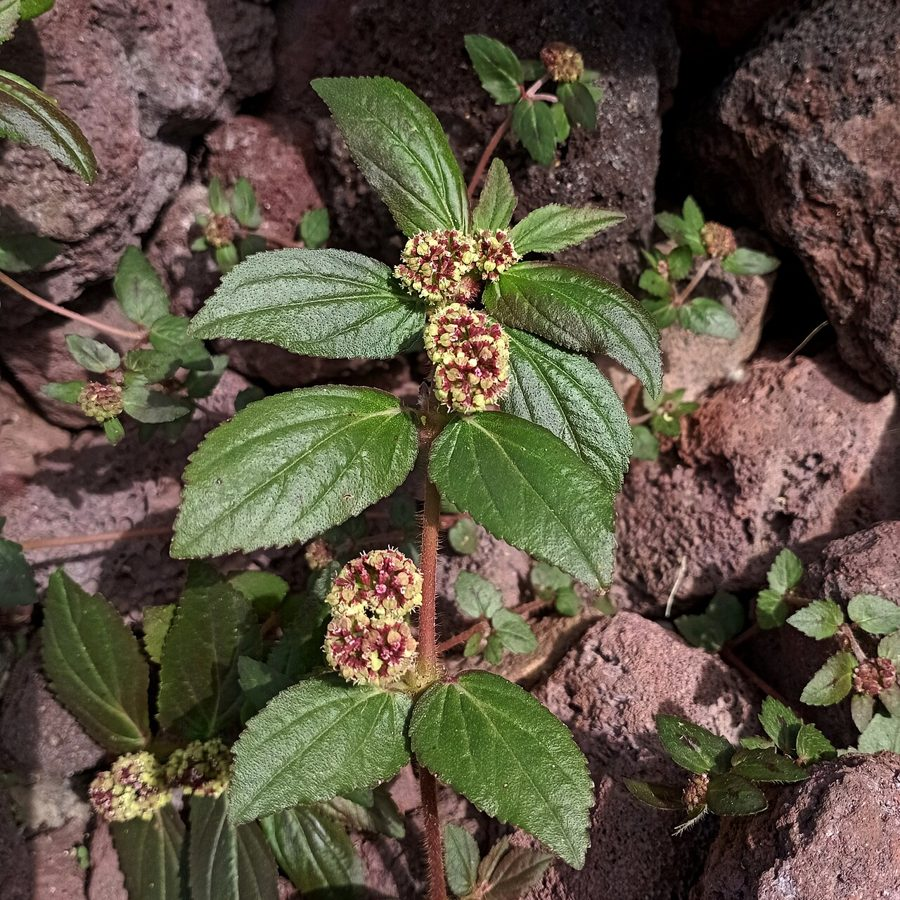

दूधीAsthma Weed
Euphorbia hirta · Euphorbiaceae · FLR-0113

- Scientific name
- Euphorbia hirta L.
- Family
- Euphorbiaceae
- Hindi
- दूधी
- Local names
- dudhi, badi dudhi, dudhiya, lal dudhi, dudhi ghas
- Status here
- naturalized
- Movement
- Resident, here all year
- IUCN
- not evaluated
- Review
- audited and independently read
When to look कब देखें
Present all year.
Uses and possibilities उपयोग और संभावनाएँ
“Traditional medicine” means a documented traditional use, not a claim that it works. Nothing on this page is medical advice.
Drawn from the documented uses in the profile below, where each is labelled traditional, current or a research lead. All uses →
दूधी / Asthma Weed
Euphorbia hirta L. — Euphorbiaceae
दूधी — आँगन की दरार, रास्ते के किनारे और खेत की मेड़ पर ज़मीन से चिपका, बालदार, लाल-भूरे तने वाला छोटा पौधा जिसे तोड़ो तो दूध निकलता है। पत्तियों के जोड़ पर छोटे गोल गुच्छे फूल के। गाँव की दवा में दमा, पेचिश और दूध बढ़ाने के लिए इसका नाम आता है; नाम ही दूध से है। दूध आँख में न लगे, यह ध्यान रखना होता है।
Quick Identification त्वरित पहचान
| Feature | Description |
|---|---|
| Habit | Low annual, sprawling or ascending, 15–50 cm, from a slender taproot |
| Stem | Reddish or purplish, covered in coarse yellowish hairs; exudes white latex when broken |
| Leaves | Opposite, 1–4 cm, oval to lance-shaped, toothed, lopsided at the base, often with a purple blotch in the middle |
| Flowers | Tiny, in dense round greenish-purple clusters 1 cm across in the leaf axils, from early in life |
| Fruit | A minute three-lobed hairy capsule 1.5 mm, splitting to shed three reddish seeds |
| Where | Trodden bare ground in full sun; it likes the edges of paths |
Field tip: The small hairy sprawling weed with milky sap and tight round flower clusters at every leaf pair, on paths and in courtyards. The purple leaf blotch and hairy red stem separate it from the smoother, smaller prostrate spurges beside it.
हिंदी — कैसे पहचानें: छोटा, बालदार, लाल तने वाला पौधा जो रास्तों और आँगन में उगता है; तोड़ने पर दूध; पत्तियों के बीच में अक्सर बैंगनी धब्बा; हर पत्ती-जोड़ पर गोल फूल-गुच्छा।
Morphology आकारिकी
Biometrics (Indian plains):
| Measurement | Range |
|---|---|
| Height / spread | 15–50 cm |
| Leaf | 1–4 × 0.5–2 cm |
| Flower cluster | 8–12 mm |
| Capsule | 1–1.5 mm |
| Seed | 0.7–1 mm |
Stem and latex: Terete, hirsute with multicellular hairs, branching from the base; the latex is a milky, slightly caustic emulsion typical of the genus.
Leaves: Opposite, shortly stalked, with small stipules; the blade oblique at the base, serrate, hairy on both faces.
Flowers: Each "flower" is a cyathium, the spurge family's cup holding one female and several male flowers with tiny glands; crowded into dense axillary cymes. Self-pollinating and prolific: a plant sets thousands of seeds in a season.
हिंदी: तना गोल, बालदार, टूटने पर दूध; पत्तियाँ आमने-सामने, किनारे दाँतेदार, जड़ से टेढ़ी। फूल असल में छोटे प्याले (साइएथियम) हैं जिनमें नर और मादा फूल साथ; एक पौधा हज़ारों बीज देता है।
Behaviour & Ecology व्यवहार और पारिस्थितिकी
A pan-tropical weed of American origin that reached India centuries ago and now grows in every village. It thrives on compacted, trodden, sun-baked ground that defeats most plants, germinates within days of rain, flowers within three weeks and seeds continuously, which is why it is always there. Ants carry the seeds and feed on the latex-rich capsules.
The clusters are worked by tiny bees and flies; the leaves feed a few hawkmoth and skipper caterpillars. Cattle avoid it because of the latex, so it persists on grazed margins when softer plants are gone.
हिंदी: अमेरिका का मूल पौधा जो सदियों पहले भारत आया और अब हर गाँव में है। कुचली, धूप में तपी ज़मीन पर उगता है, बारिश के दिनों में फूट जाता है, तीन हफ़्ते में फूल। चींटियाँ बीज ले जाती हैं। दूध की वजह से पशु नहीं खाते।
Life Cycle / Phenology जीवन चक्र
| Month / season | Event |
|---|---|
| June–July | Germination with the rains; a second flush with winter irrigation |
| 3 weeks on | First flowers |
| July–November | Continuous flowering and seeding |
| December–February | Plants persist in frost-free spots; growth slow |
| March–May | Survives in watered courtyards and beds; dies on dry ground |
हिंदी: बरसात में उगता है, तीन हफ़्ते में फूल, पतझड़ तक बीज; पानी मिलता रहे तो साल भर।
Associated Species / Interactions संबंधित प्रजातियाँ
- Path-side companions: Tridax Daisy, Prickly Chaff Flower, Doob Grass, Nutgrass.
- Visitors: small halictid bees, flies, and ants on the capsules.
- Caterpillars: a few hawkmoths and skippers.
Pests and Diseases कीट और रोग
- Rust fungus on the leaves in humid weather.
- Otherwise unbothered; a weed with few enemies.
Agricultural / Human Relevance कृषि प्रासंगिकता
Traditional and Ethnobotanical Use (documented uses; not medical advice):
- Respiratory complaints. The English name comes from its reputation, in India and elsewhere, for asthma and bronchitis; decoctions are recorded in Kirtikar & Basu and Chopra. No clinical evidence supports this, and the plant is not a substitute for treatment.
- Dysentery and diarrhoea. A common village use of the whole plant; the subject of laboratory studies on gut bacteria.
- Lactation. The milky latex gave it the name dudhi and a folk use for increasing milk in nursing mothers and cattle.
- Warts and skin. The latex is applied to warts and corns, as with other spurges.
- Caution. The latex irritates eyes and broken skin and is mildly toxic if swallowed in quantity; children should not play with it.
Today. A minor herbal-trade plant, gathered from the wild; a nuisance weed in vegetable beds and lawns but too small to matter in field crops.
Research direction (a lead, not a result). Euphorbia hirta has a sizeable pharmacological literature, including studies on anti-diarrhoeal, anti-inflammatory and larvicidal activity against mosquitoes; all at the level of extracts in the laboratory, none at the level of a proven medicine.
हिंदी: गाँव की दवा में दमा, पेचिश और दूध बढ़ाने के लिए; मस्से पर दूध लगाने के लिए। कोई चिकित्सकीय प्रमाण नहीं, और इलाज का विकल्प नहीं। दूध आँख और घाव में जलन करता है। मच्छर के लार्वा पर इसके अर्क का शोध हुआ है।
Expected Locally स्थानीय रूप से अपेक्षित
Not a field record. Written from published accounts for eastern Uttar Pradesh. No confirmed local sighting yet — if you have seen it, that is what the atlas needs.
अभी तक स्थानीय पुष्टि नहीं। यह विवरण प्रकाशित स्रोतों से है, किसी अवलोकन से नहीं।
To be expected in every courtyard, path edge and vegetable bed in the district from the first rains onward. One of the easiest plants in the atlas to confirm with a photograph.
Distribution वितरण
Global range: Native to tropical America; now a weed throughout the tropics and subtropics.
In India: Everywhere in the plains and hills to about 1,800 m.
In Uttar Pradesh: Ubiquitous.
In Basti district / eastern UP: Expected in every settlement and field.
Research Questions शोध प्रश्न
Anyone can investigate these | कोई भी इन प्रश्नों की जाँच कर सकता है
- How many days from rain to first flower? / बारिश से पहले फूल तक कितने दिन? — Mark a seedling in a courtyard and count.
- Which insects visit the flower clusters? — Ten minutes with a hand lens on a warm morning.
- Does anyone in the village use dudhi, and for what? / गाँव में दूधी का उपयोग कौन, किसलिए करता है? — Ask the older women and the vaidya.
- Do ants carry the seeds? — Watch a fruiting plant for ant traffic.
- Does it grow where cattle graze hardest? — Compare a grazed margin with an ungrazed one.
Similar Species मिलती-जुलती प्रजातियाँ
| Species | How to tell apart | हिंदी |
|---|---|---|
| Small prostrate spurge (Euphorbia thymifolia) | Flat to the ground, tiny leaves 5 mm, nearly hairless; flowers single not clustered | ज़मीन से चिपकी, बहुत छोटी पत्ती |
| Snake weed (Euphorbia prostrata) | Prostrate, reddish, smooth; capsules hairy only on the angles | चिकनी, लाल, ज़मीन पर |
| Prickly Chaff Flower (Achyranthes aspera), seedling | Opposite leaves too, but no milky sap, and later an upright spike | दूध नहीं |
Field rule: Hairy reddish stems with milky sap and dense round flower clusters in the leaf axils, on trodden ground, is dudhi.
Taxonomy & Classification वर्गीकरण
Original description. Linnaeus, Species Plantarum 1: 454 (1753). Euphorbia honours Euphorbus, physician to a king of Mauretania; hirta, "hairy".
Subspecies. Monotypic — no subspecies are currently recognised; sometimes placed in the segregate genus Chamaesyce.
Family and order placement. Euphorbiaceae, order Malpighiales; Euphorbia is one of the largest plant genera, with some two thousand species.
Phylogenetic notes. Belongs to the Chamaesyce clade of Euphorbia, the C4 sandmat spurges, which explains its vigour in hot bare places.
IUCN status rationale. Not evaluated. A cosmopolitan weed.
Photo Gallery फोटो गैलरी
Photos needed आवश्यक फोटो
- [ ] Plant on a path edge (पौधा)
- [ ] Close-up of leaf blotch and flower cluster (पत्ती और फूल)
- [ ] Latex from a broken stem (दूध)
Atlas Connections संबंधित प्रजातियाँ
- Tridax Daisy and Prickly Chaff Flower — the other weeds of paths and courtyards
- Nutgrass — the sedge it grows among in beds
- Southern House Mosquito — the mosquito whose larvae its extracts have been tested against
References संदर्भ
- Linnaeus, C. (1753). Species Plantarum, vol. 1, p. 454. Stockholm. [original description]
- Hooker, J.D. (1887). The Flora of British India, vol. 5. L. Reeve, London.
- Duthie, J.F. (1911). Flora of the Upper Gangetic Plain, vol. 2. Government Printing, Calcutta.
- Kirtikar, K.R. & Basu, B.D. (1935). Indian Medicinal Plants, 2nd ed., vol. 3. Lalit Mohan Basu, Allahabad.
- Chopra, R.N., Nayar, S.L. & Chopra, I.C. (1956). Glossary of Indian Medicinal Plants. CSIR, New Delhi.
- Council of Scientific and Industrial Research (1952). The Wealth of India: Raw Materials, vol. 3 (D–E). CSIR, New Delhi.
- Holm, L.G., Plucknett, D.L., Pancho, J.V. & Herberger, J.P. (1977). The World's Worst Weeds. University Press of Hawaii, Honolulu.
- GBIF Occurrence Data — Euphorbia hirta, India (2026).
Source file: species/flora/weeds/dudhi.md